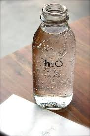

CASE STUDY GOOGLE LENS & MOBILNET
-
Test image

- Test image 
Output on mobilenet Project-Blue Shoes
Output on googlelens Project-blue sneakers,shoes
Result - GOOGLE LENS IS MORE ACCURATE
Output on mobilenet Project-water jug
Output on googlelens Project-bottle filled with water
Result - GOOGLE LENS IS MORE ACCURATE
I have tested 2 images & mobilnet have predicted 0 correctly & googlelens have predicted 2 of them correctly. So according to my case study google lens is more accurate.